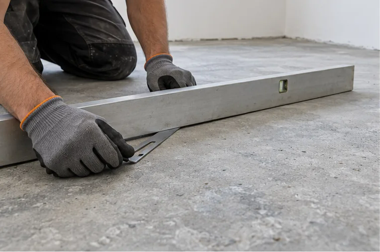
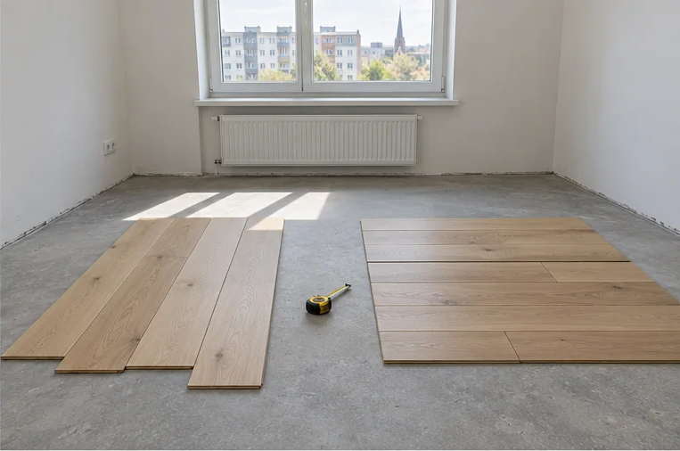
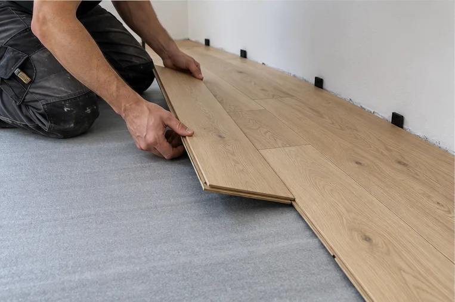
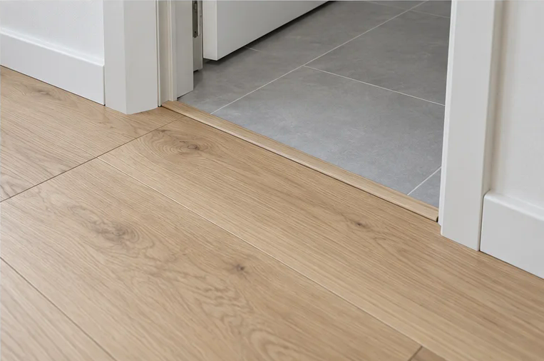

Parketipaigalduse tööprotsess Tallinna korteris
Uus põrand muudab kogu ruumi ilmet, kuid hea tulemus algab juba enne esimese parketilaua paigaldamist.
Aluspinna kontrollist viimistletud põrandani
Korteri parketipaigaldus algab aluspinna kontrollist ja paigaldussuuna valikust. Seejärel paigaldatakse lauad ning lõpetatakse seinaääred ja üleminekud teiste põrandakatetega.
Allolevad pildid on genereeritud tööprotsessi illustratsioonid, mis selgitavad iga etappi.

1. Aluspinna kontroll
Enne paigaldust kontrollitakse aluspinna tasasust kontroll-latiga. Lisaks hinnatakse pinna tugevust, puhtust ja kuivust ning vajadusel mõõdetakse niiskust. Aluspind peab vastama valitud parketi tootja nõuetele.

2. Paigaldussuuna valik
Lahtiste laudade proovipaigutus aitab võrrelda kahte suunda enne põranda paigaldamist. Valikul arvestatakse aknast tulevat valgust, ruumi kuju, läbikäike ja soovitud mustrit.

3. Parketi paigaldamine
Pildil on ujuva klikkparketi paigaldus aluskattele. Lauad ühendatakse tootja juhiste järgi ja otsavuugid nihutatakse üksteise suhtes. Seinte ning muude fikseeritud osade äärde jäetakse tootja nõutud paisumisruum.

4. Servade ja üleminekute viimistlus
Töö lõpetatakse põrandaliistude ja sobivate üleminekuprofiilidega. Ukseavas ühendab profiil parketi teise põrandakattega; liistud katavad seinaäärse paisumisvuugi nii, et ujuva põranda liikumine säilib.
Mida valmis põranda juures kontrollida?
Enne töö üleandmist kontrollitakse laudade ühendusi, liistude kinnitust, ukseavade üleminekuid ja uste liikumist. Ujuva põranda paisumisvuugid peavad säilima ka pärast liistude paigaldamist.
Kas soovid oma korterisse uut põrandat?
Esmase hinnangu saamiseks saada meile ruumi pindala või mõõdud, fotod olemasolevast põrandast, objekti asukoht ja soovitud põrandamaterjal. Lisa ka info selle kohta, kas vana põrand tuleb eemaldada ning kas vajad uusi liiste.
Kui fotodest ei piisa, lepime kokku objekti ülevaatuse. Enne töö alustamist saad selge pakkumise ja tööde ajakava. Tehtud ehitus- ja viimistlustöödele kehtib 3-aastane garantii.
Üksikud täkked ei vaja alati uut põrandat
Kui põrand on muidu heas seisukorras, kuid sellel on üksikud täkked või sügavamad kriimustused, võib piisata kohalikust parandusest. Vaata lähemalt parketi täkete parandamist kuumvahaga.
Korduma kippuvad küsimused
Millal on õige aeg parkett korteris paigaldada?
Parkett paigaldatakse tavaliselt pärast tolmuseid ja niiskeid ehitustöid ning enne lõplikku mööbli paigutamist. Kui seinad vajavad pahteldust või värvimist, tasub tööjärjekord enne kokku leppida.
Miks on aluspinna kontroll parketi paigaldusel oluline?
Ebatasane, niiske või liikuv aluspind võib põhjustada naginat, parketi ühenduste avanemist ja ebaühtlast lõpptulemust. Aluspinna kontroll aitab otsustada, kas enne paigaldust on vaja tasandust või parandusi.
Kas vana põrand tuleb alati eemaldada?
Mitte alati. See sõltub vana katte seisukorrast, kõrgusest ja stabiilsusest. Kui vana põrand liigub, kriuksub või selle all on niiskusprobleem, tuleb põhjus enne uue parketi paigaldamist lahendada.
Kas paigaldate ka põrandaliistud?
Jah. Vajadusel paigaldame nii põrandaliistud kui ka üleminekuliistud.